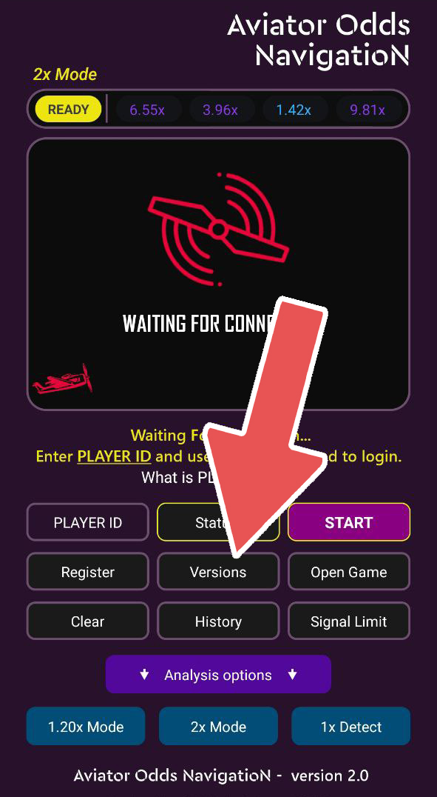
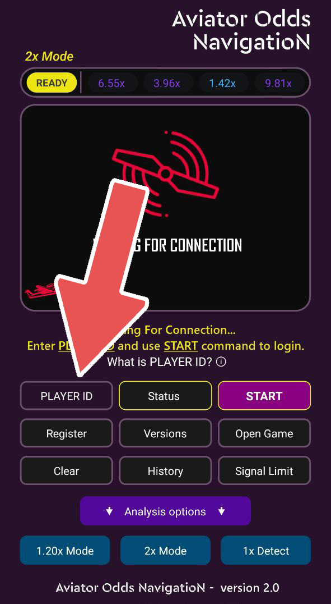
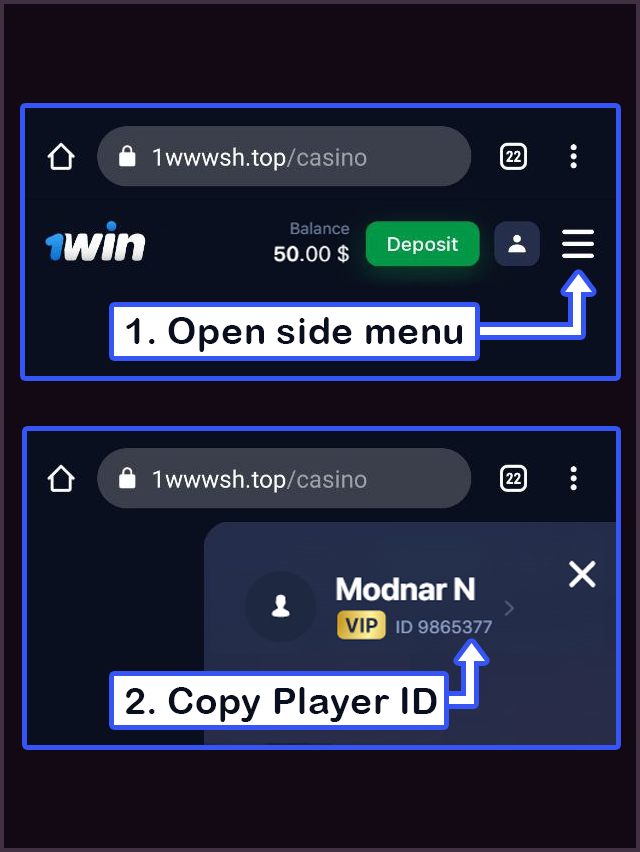

Aviator Odds Navigation
Aviator Odds Navigation ücretsiz aviator apk sinyal hilesidir. Aviator oyununda canlı analiz yapıyor. Bu uygulama, Aviator oyununun oran oluşturma algoritmasının şifresini çözmek için geçmiş oran verilerini ve makine öğrenimini kullanıyor.
Hakkında
Aviator Odds Navigation ücretsiz aviator apk sinyal hilesidir. Aviator oyununda canlı analiz yapıyor. Bu uygulama, Aviator oyununun oran oluşturma algoritmasının şifresini çözmek için geçmiş oran verilerini ve makine öğrenimini kullanır. Aviator hilesi bir önceki oranları analiz ederek yeni oranın 2x üzerinde olup olmayacağını tahmin eder. Aviator hilesi her zaman son 1 ayda tüm Aviator oyunundakı tüm verileri kullanarak bir sonrakı oyun hakkında analiz yapar. Hileyi kullanarak sürekli kazanmamaya dikkat edin. Aviator yazılım kurulumunu yapmak için aşağıdakı adımlar takip edebilirsiniz. Bu uygulama Aviator Predictor apk alternatifidir. Aviator predictor bir çok kişi tarafından satılan bir uygulama. Genellikle kimsede çalışmıyor. Aviator Predictor en iyi alternatifi Aviatior Odds Navigation uygulamasıdır. Bu uygulama Aviator Predictor gibi ücretli değildir. Aviator predictor internette bir çok insan tarafından satılan sahte bir uygulamadır. Aviator Odds Navigation ücretsizdir ve makine öğrenimi ile eski oranların analizini yapar. (görsel 0)
görsel (0)
Çalışma prensibi

Kurulum
Aviator Odds Navigation apk uygulamasının kurulumunu yapmak için öncelike android bir cihaza ihtiyacınız var. Android cihazınıza Aviator oyununun hilesi indirmek için Aviator Odds Navigation apk bu bağlantıdan indirebilirsiniz. Aviator hilesini açtıktan sonra aşağıdakı görselde (görsel 1) olan bir sayfa sizi karşılayacaktır. Aviator hilenizin güncel olup olmadığını öğrenmek için programdakı versions buttonuna tıklayabilirsiniz. Aviator hilesinin en son sürümünü kullandığınızdan emin olun.
görsel (1)
Player ID nedir? (görsel 2)
görsel (2)
Player ID oyuncu hesap numaranızdır. Aviator sinyal hilesi bu sunucu üzerinden çalışıyor. https://1wwwsh.top/ Player ID oluşturmak için kayıt olun. Kayıt olduktan sonra Player ID nerede olduğuna buradan bakabilirsiniz (görsel 3) Player ID kopyalayın.
görsel (3)
Aviator hilesini açın. Kopyaladığınız Player ID numarasını buraya yapıştırın. Daha sonra Start buttonuna basın. (görsel 4)
görsel (4)

12 saat içinde hesabınız otomatik olarak sistem tarafından kabul edilecektir. Bazen hesaplar kabul edilmeyebilir. Eğer hata mesajı alıyorsanız farklı tarayıcı kullanarak tekrar kayıt olun https://1wwwsh.top/ ve yeni bir Player ID oluşturun. Bazı kullanıcılar 2 ci denemede onay mesajı aldı. (görsel 5)
görsel (5)

Aviator hilesi apk indir
Aviator hilesi apk indirme bağlantısı
Cevap: hayır.
Aviator Hilesi "Ghost BASE PRO" Korumasında çalışır. Ghost BASE PRO Koruması ile hille kullandığınız farkedilmez.